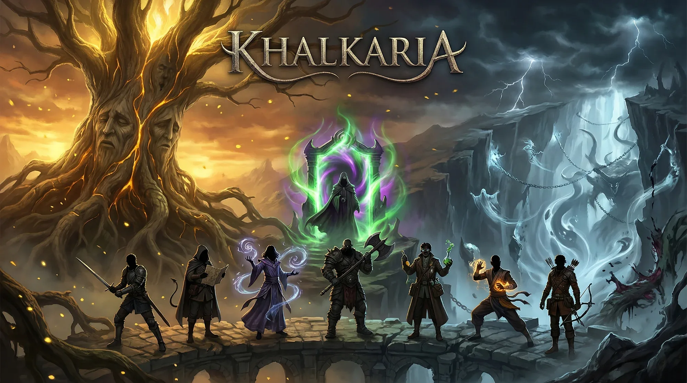

📋 Índice de Navegação
Fundamentos
Atributos Iniciais
Existem 5 Atributos em Khalkaria:
- Força
- Destreza
- Constituição
- Inteligência
- Sabedoria
Modificador de Atributo: é o valor que o atributo soma nas perícias, no dano e no cálculo dos status. Subtraia 10 do atributo e divida por 2, arredondando para baixo. Ou seja, o modificador aumenta a cada 2 pontos de atributo.
| Atributo | Modificador |
|---|---|
| 1 (Mín.) | -5 |
| 2–3 | -4 |
| 4–5 | -3 |
| 6–7 | -2 |
| 8–9 | -1 |
| 10–11 | +0 |
| 12–13 | +1 |
| 14–15 | +2 |
| 16–17 | +3 |
| 18–19 | +4 |
| 20–21 | +5 |
| 22–23 | +6 |
| 24–25 | +7 |
| 26–27 | +8 |
| 28–29 | +9 |
| 30 (Máx.) | +10 |
Criação de Personagem:
- Role 4d6 5 vezes, retire o pior dado de cada rolagem e anote o valor dos 5 resultados.
Distribua os 5 valores dentre seus 5 atributos.
Você pode retirar 1 ponto de um atributo e adicionar a outro. - Escolha sua raça.
- Escolha sua classe.
- Escolha sua origem.
Status
Sua classe determina os valores dentre estes 3 status universais:
Além dos 3 status universais, cada classe possui 3 valores personalizados:
Perícias
Em ordem de regra, quase todas as rolagens utilizam o d20.
| Perícia | Descrição | Dado + Mod. |
|---|---|---|
| Atacar | Define sua habilidade de acertar um alvo de maneira destrutiva. | 1d20+(Força ou Destreza) |
| Defender | Define sua habilidade de evasão/resistência a ataques. | 1d6 / 1d8 / 1d10 / 1d12 / 2d8 (o dado escala com o treinamento — ver abaixo) |
| Movimento | Define quão bem você consegue movimentar o seu corpo tanto de maneira bruta como de maneira ágil. | 1d20+(Força ou Destreza) |
| Fortitude | Define sua habilidade de superar condições físicas como cansaço, envenenamento… | 1d20+Constituição |
| Vontade | Define o controle e poder sobre sua mente. | 1d20+Sabedoria |
| Reflexos | Define sua habilidade de reação e de desviar de ameaças. | 1d20+Destreza |
| Percepção | Define sua habilidade de perceber seus arredores ou detalhes. | 1d20+Sabedoria |
| Sobrevivência | Define quão bem você lida com a natureza. | 1d20+Sabedoria |
| Furtividade | Define quão bem você consegue se ocultar da percepção dos outros. | 1d20+Destreza |
| Crime | Define quão bem você consegue furtar criaturas, arrombar portas ou destruir evidências. | 1d20+Destreza |
| Iniciativa | Define sua velocidade de discernimento e decisão perante o perigo eminente. | 1d20+Destreza |
| Conhecimento | Define seu repertório intelectual e habilidade lógica. | 1d20+Inteligência |
| Medicina | Define seus conhecimentos médicos e biológicos. | 1d20+Inteligência |
| Investigação | Define sua habilidade de vasculhar e encontrar coisas. | 1d20+Inteligência |
| Religião | Define seus conhecimentos sobre religião e a cosmologia. | 1d20+Sabedoria |
| Místico | Define seu conhecimento e poder perante as forças primordiais. | 1d20+Inteligência |
| Ofício(Engenharia) | Você pode utilizar essa perícia como uma ação de descanso longo para fabricar uma Bugiganga. A fabricação exige Materiais e o sucesso na perícia. Você não pode utilizar essa perícia sem tê-la treinada. | 1d20+Inteligência |
| Ofício(Ferraria) | Você pode utilizar essa perícia como uma ação de descanso longo para fabricar uma Bugiganga. A fabricação exige Materiais e o sucesso na perícia. Você não pode utilizar essa perícia sem tê-la treinada. | 1d20+Inteligência |
Interação Social
Interação social possui 5 ramos. Você não tem proficiência em Interação Social, mas em cada uma das suas vertentes. Ou seja, você pode ser treinado em Intimidação, mas não Convencimento.
| Vertente | Atributo | Descrição |
|---|---|---|
| Convencimento | Des ou Int |
Habilidade de diplomacia/persuasão contra uma criatura |
| Intimidação | Con ou For |
Habilidade de infligir medo/respeito em uma criatura |
| Intuição | Sabedoria |
Habilidade de ler as intenções/sentimentos de uma criatura |
| Enganação | Des ou Int |
Habilidade de enganar uma criatura |
| Motivar | Sabedoria |
Habilidade de mudar os sentimentos de uma criatura |
Proficiência/Treinamento
Ao rolar uma perícia soma-se seu nível de proficiência nela, variando entre:
Proficiência é ganha progressivamente por sua classe, raça, origem, cartas do Limiar ou Npcs.
Você nunca receberá uma habilidade que diga "Experiente em Atacar", por exemplo. Mas ao possuir duas habilidades que te fornecem "Treinado em Atacar" você se torna experiente nesta.
Defender — regra especial
A perícia Defender possui uma regra que nenhuma outra tem: seus treinamentos aumentam o tipo de dado da rolagem em vez de adicionarem modificadores. Em Leigo ela usa 1d6, e os treinamentos posteriores elevam o dado progressivamente.
| Leigo | Treinado | Experiente | Mestre | Lendário |
|---|---|---|---|---|
| 1d6 | 1d8 | 1d10 | 1d12 | 2d8 |
Críticos e Falhas
Crítico: Se tirar 20 no dado você críta. (a Margem de Ameaça pode aumentar os resultados em que você críta)
Falha Crítica: Se tirar 1 no dado você falha criticamente.
Vantagem: Role 2d20 e use o maior resultado.
Desvantagem: Role 2d20 e use o menor resultado.
- Vantagem e desvantagem não se acumulam: várias fontes de vantagem continuam sendo 2d20.
- Se você tiver vantagem e desvantagem ao mesmo tempo, elas se anulam e você rola normalmente.
- Crítico e falha crítica valem para o dado que você usou.
- Na perícia Defender, que usa dado próprio, role esse dado duas vezes.
Combate
Iniciando um combate todos rolam a perícia Iniciativa, ordenando quem joga primeiro.
Sua Rodada
Você possui 3 ações e 1 reação por turno, alguns exemplos dentre as listadas abaixo:
- Mover (1 ação) — Max. 1 vez por turno
- Pular (2 ações) → Pula 1/3 do seu Movimento.
- Acelerar (1 ação) → +3 m de movimento nesta rodada.
- Atacar (Depende da arma) — Ataques consecutivos somam −5 a cada ataque no mesmo turno.
- Defender (1 ação) → +2 Defender até seu próximo turno.
- Defender fora do seu turno (Reação) → Soma o dado da perícia Defender à sua evasão contra todos os ataques do agressor nesta rodada.
- Conjurar magia (1-3 ações)
- Técnica Específica (1–3 ações)
- Outro (1-3 ações) — dependendo de sua dificuldade ou demora para executar
- Reações servem para regras/habilidades específicas
Atacando & Retaliação
Ao atacar alguém você sempre se coloca em risco, sendo potencialmente Retaliado, tenha isso em mente.
- Role a perícia Atacar. Se seu alvo ainda tiver uma reação, ele possui 2 opções (rolar a perícia: Atacar ou Defender):
- Atacar (Retaliar): O alvo tenta te retaliar: Caso o alvo ultrapasse seu valor, ele te ataca com a arma que estiver empunhando, também recebendo seu dano.
- Caso ele acerte criticamente, ele nega seu dano, ainda sim, te retaliando.
- Caso ele falhe criticamente, seu ataque contra ele é crítico.
- Defender: O alvo tenta se defender: O alvo adiciona a rolagem da perícia Defender a sua evasão. Caso o atacante role abaixo da evasão do alvo, o alvo esquiva/bloqueia.
- Atacar (Retaliar): O alvo tenta te retaliar: Caso o alvo ultrapasse seu valor, ele te ataca com a arma que estiver empunhando, também recebendo seu dano.
Enquanto estiver sendo alvo dos seus ataques durante o seu turno, a criatura pode escolher reagir (Atacar ou Defender) a cada um deles. Ao final do seu turno, ela considera a reação gasta e não pode mais usá-la até o início do próximo.
Em caso de empate, o atacante sempre ganha.
Ataques de Oportunidade
Ao estar a 1,5 m de uma criatura e se afastar dela, ela pode gastar sua reação para realizar um ataque de oportunidade contra você.
Dano e Defesa
Dano
Dano = Dano da arma + Mod. Atributo
Dano Crítico = Role o dobro de dados + Mod. Atributo
Margem de Ameaça = a faixa do d20 em que seu ataque é considerado um crítico
Por padrão, apenas ao rolar 20.
Multiplicador de Crítico = o quanto o crítico de uma arma multiplica
Por padrão, o dobro.
- Corpo a Corpo Pesado = +Mod. Força
O acerto usa a perícia atacar com Mod. de Força, dano dá +Mod. de Força. - Corpo a Corpo Leve = +Mod. Destreza
O acerto usa a perícia atacar com Mod. de Destreza, dano dá +Mod. de Destreza. - À Distância = +Mod. Destreza
O acerto usa a perícia atacar, com Mod. de Destreza, dano dá +Mod. de Destreza. - Armas Místicas = +Mod. Inteligência/Sabedoria
Quando a magia exige um ataque, o acerto usa a perícia místico, dano dá +Mod. de Inteligência/Sabedoria.
Defesa
Evasão = Determinada pela sua classe, define se você desvia/resiste o dano quando alvo de um ataque.
- Evasão Passiva — É sua evasão natural. Quando alvo de um ataque, se sua evasão for maior que a rolagem de ataque você desvia/resiste o ataque.
- Evasão Ativa — Quando alvo de um ataque, você pode gastar sua reação para somar o dado da perícia Defender (conforme seu treinamento) à sua evasão contra todos os ataques do agressor neste turno.
Armadura (Ar) = Reduz dano ordinário em uma constante fixa, dependendo da armadura
Resistência, Vulnerabilidade e Armadura Específica (Ae)
- Resistência a um dano específico o reduz sempre a metade.
- Vulnerabilidade a um dano específico sempre o dobra.
- Armadura Específica (Ae) reduz dano atípico em uma constante fixa.
Ae(Tipo de dano, Quant. de resist.)é o formato padrão.
Ex.: Ae(Místico, 2), ao receber 10 de dano místico, recebe apenas 8. - Armaduras Pesadas e Leves
Os itens de armadura equipáveis são subdivididos em dois grupos:- Armadura Pesada — Você pode equipar apenas 1 Armadura pesada, ela geralmente define seu traje e arquétipo.
- Armadura Leve — Você pode equipar até 2 Armaduras Leves, elas geralmente proveem Ae e Passivas diversas.
Tipos de Dano
Ordinário
- Cortante
- Contundente
- Perfurante
Elemental
- Fogo
- Frio
- Elétrico
Biológico
- Veneno
- Ácido
- Psíquico
Místico
- Radiante
- Trovejante
- Necrótico
Outros
- Força
- Primordial
Manobras
Ao batalhar você pode querer fazer certas manobras de combate:
| Manobra | Mecânica | Efeito |
|---|---|---|
| Empurrar | Movimento × Fortitude |
Se ganhar você empurra o alvo até 3 m + 1,5 m para cada 5 pontos sobrepujantes. Ao empurrar com sucesso, o alvo fica Caído. |
| Desarmar | Movimento × Movimento |
Se ganhar você derruba a arma do alvo no chão. |
| Agarrar | Movimento × Movimento |
Se ganhar você domina o alvo com no mínimo 1 mão. Atacar contra o alvo possui +2 e o alvo recebe -2 ao Atacar. O alvo fica Enraizado até se livrar do agarrão. |
| Investida | 2 ações · Movimento |
Você gasta duas ações para se movimentar até seu Movimento em linha reta. A cada inimigo colidido no seu caminho, faça um teste de Movimento contra ele: em caso de sucesso, você realiza 1 ação: Atacar contra ele e segue para o próximo alvo na trajetória; em caso de falha, você é interceptado, para antes do alvo contra o qual falhou e realiza 1 ação: Atacar contra ele. |
Equipamento
Armas
São altamente interpretativas, nesse sistema você pode criar a arma que quiser e usar os status da categoria que mais se aproxima a ela. Cada tipo de arma possui 6 características principais:
- Dado Base
- Atributo
- Tipo de dano
- Efeito
- Ações
- Requisito — Utilizar uma arma sem os requisitos apropriados, nega seu efeito e provê desvantagem ao atacar.
Armas Leves — Requisito: Destreza ≥ 12
| Tipo | Dado | Atrib. | Dano | Efeito | Ações | Req. Extra |
|---|---|---|---|---|---|---|
| Leve Cortante | 1d6 | Des | Cortante | Dilacerar | Atacar(1), Arremessar(1) | — |
| Leve Perfurante | 1d6 | Des | Perfurante | Alcançar | Atacar(1), Arremessar(1) | — |
| Leve Contundente | 1d6 | Des | Contundente | Desorientar | Atacar(1), Arremessar(1) | — |
| Leve Ágil | 1d8 | Des | Cortante, Perfurante ou Contundente | Executar | Atacar(1) | Des ≥ 14 |
Armas Pesadas — Requisito: Força ≥ 12
| Tipo | Dado | Atrib. | Dano | Efeito | Ações | Req. Extra |
|---|---|---|---|---|---|---|
| Pesada Cortante | 1d12 | For | Cortante | Dilacerar | Atacar(2) | — |
| Pesada Perfurante | 1d12 | For | Perfurante | Alcançar | Atacar(2) | — |
| Pesada Contundente | 1d12 | For | Contundente | Desorientar | Atacar(2) | — |
| Pesada Brutal | 2d12 | For | Cortante, Perfurante ou Contundente | Executar | Atacar(3) | For ≥ 14 |
Armas Marciais — Requisito: Treinado em Armas Marciais
| Tipo | Dado | Atrib. | Dano | Efeito | Ações | Req. Extra |
|---|---|---|---|---|---|---|
| Marcial Pesada | 2d10 | For | Contundente | Desorientar — 1x/Turno não custa Stamina | Atacar(2) | — |
| Marcial Longa | 2d10 | For | Perfurante | Alcançar — 1x/Turno não custa Stamina | Atacar(2) | — |
| Marcial Precisa | 1d8 | Des | Cortante | Executar — 1x/Turno não custa Stamina | Atacar(1) | — |
| Marcial Versátil | 1d8 | Des | Cortante, Perfurante ou Contundente | Dilacerar — 1x/Turno não custa Stamina | Atacar(1) | — |
Armas à Distância — Requisito: Treinamento à Distância
| Tipo | Dado | Atrib. | Dano | Efeito | Ações | Req. Extra |
|---|---|---|---|---|---|---|
| Distância Simples | 1d6 | Des | Perfurante | Dilacerar | Atacar(1) | — |
| Distância Pesada | 1d12 | Des | Perfurante | Executar | Atacar(2) | — |
| Arremesso | 1d8 | Des | Perfurante | Dilacerar | Atacar(1) | Des ≥ 14 |
Armas Místicas — Requisito: Inteligência ≥ 12
| Tipo | Efeito | Requisito Extra |
|---|---|---|
| Foco de Abjuração | Ao ser empunhado, permite castar magias de Abjuração | — |
| Foco de Destruição | Ao ser empunhado, permite castar magias de Destruição. | — |
| Foco de Conhecimento | Ao ser empunhado, permite castar magias de Conhecimento. | — |
| Foco de Alteração | Ao ser empunhado, permite castar magias de Alteração. | — |
| Foco Primordial | Ao ser empunhado, permite castar magias Primordiais. | Experiente em Místico |
Efeitos
Toda arma possui um efeito, ativável ao gastar Stamina:
| Efeito | Descrição | Custo Stamina |
|---|---|---|
| Dilacerar | Seu próximo ataque aplica Sangramento 1 no acerto. | 2 |
| Alcançar | Seu próximo ataque tem +1,5 m de Alcance e não pode ser retaliado. | 2 |
| Desorientar | Seu próximo ataque aplica Desorientado no acerto. | 2 |
| Executar | Seu próximo ataque tem +1 dado de dano. | 3 |
Nível de Armas
| Nível | Bônus de Dano | Bônus ao Atacar |
|---|---|---|
| +1 | +1 dado de dano | +1 ao atacar |
| +2 | +2 dados de dano | +2 ao atacar |
| +3 | +3 dados de dano | +3 ao atacar |
Focos — aprimoramento do Foco de escola
| Nível | Bônus Místico | Éter Máximo |
|---|---|---|
| +1 | +1 Místico | +5 Éter máximo |
| +2 | +2 Místico | +10 Éter máximo |
| +3 | +3 Místico | +15 Éter máximo |
Munição de Armas
Armas à distância requerem 1 munição para serem usadas pelo combate inteiro.
A munição é descontada por combate.
Tipos de Munição:
- Distância Simples: Flecha e Virote
- Distância Pesada: Munição de Fogo
- Arremesso: Conjunto de Arremesso
Equipamentos
Os itens que são classificados como equipamentos são subdivididos em 2 categorias: Pesados e Leves
- Equipamentos Pesados — São normalmente, sets de armadura que provêm Armadura e as vezes armadura específica. Você só pode equipar 1 item deste tipo.
- Equipamentos Leves — Peças de armadura que podem prover diversos efeitos, você pode equipar no máximo 2 itens deste tipo.
Inventário e Peso
Existem 2 categorias de item: Equipamentos e Bugigangas. Equipamentos como Espadas, Machados, Arcos, Peitorais, escudos… pesam bastante enquanto Bugigangas (todo o resto) pesam geralmente menos.
- Você pode carregar um total de 2+Mod. Força (Min. 1) Equipamentos, itens equipados não contam.
- Você pode carregar um total de 10+Mod. Força (Min. 1) Bugigangas, munições (Flechas e etc) contam como 1 bugiganga.
- Itens leves contam como 1 bugiganga a cada 10 unidades.
- Moedas (Sins) não pesam.
- Mochilas podem aumentar seu limite de peso.
Penalidades por Sobrepeso:
| Condição | Penalidade |
|---|---|
| Acima do peso máximo, porém menos que o dobro | Condição: Sobrepeso Leve |
| Igual ou mais que o dobro do peso máximo | Condição: Sobrepeso Extremo |
Dinheiro
As criaturas de Khalkaria oferecem serviços a troco de diferentes moedas de troca. Porém a moeda mais comum são os Sins.
Os jogadores podem obter Sins das mais diversas formas. Uma delas sendo vendendo itens, dessa maneira, todo item possui um valor, listado a seguir:
| Tipo de Item | Sins | Descrição |
|---|---|---|
| Lixo | 1d8+2 | O item basicamente não tem utilidade e dificilmente pode ser vendido. |
| Ordinário | 2d10+10 | O item é comumente vendido por mercantes locais, porém não é considerado valioso. |
| Incomum | 4d10+45 | O item é vendido raramente por mercantes, e possui um uso útil ou visual interessante. |
| Exótico | 5d12+180 | O item é uma raridade, podendo ser um artefato histórico ou fabricado por um artesão extremamente habilidoso. |
| Luxária | 6d20+620 | O item é único no mundo e possui usos transcendentais, muitas vezes criado por um deus ou utilizado por uma lenda viva. |
O Bazar
O Bazar é o grande compêndio de itens de Khalkaria — armas, armaduras, consumíveis, relíquias e bugigangas. Todas estão listadas no site do Rpg com sistema de busca e mais detalhes.
Todo o compêndio é dividido em 9 categorias e 5 raridades:
| Categoria | Definição |
|---|---|
| Arma | Armas são itens equipáveis e utilizadas para causar dano. Toda arma possui um tipo, listado na tabela de armas, definindo seus dados de dano, ações, requisito e efeito ativável. As armas genéricas e algumas armas únicas podem ser fabricadas através da perícia Ofício(Ferraria). |
| Armadura | Armaduras são itens equipáveis separados em 2 grupos: Armaduras Pesadas e Armaduras Leves. Você pode equipar até 1 armadura pesada, geralmente oferecem Ar e habilidades únicas. Você pode equipar até 2 armaduras leves, geralmente oferece Ae e passivas diversas. Algumas podem ser fabricadas através da perícia Ofício(Ferraria). |
| Escudo | Escudos são itens off-hand que podem ser equipados junto de qualquer arma. Ao utilizar sua reação para se defender, o escudo provê um aumento na perícia Defender. Alguns podem ser fabricados através da perícia Ofício(Ferraria). |
| Consumível | Consumíveis são itens utilizáveis que geralmente são gastos após o uso. Alguns podem ser fabricados através da perícia Ofício(Engenharia), a maioria pode ser fabricado pelo Ofício(Alquimia). |
| Munição | Munições são itens requisitos de armas à distância, gastos a cada cena de combate, para funcionarem adequadamente. Utilizar uma munição especial no combate, concede seu efeito durante todo o combate em cada ataque da arma à distância. Algumas podem ser fabricadas através da perícia Ofício(Engenharia). |
| Bugiganga | Bugigangas são itens que divergem entre prover passivas únicas, equipamentos de uso contínuo narrativo e é definida como a categoria de itens variados. Algumas podem ser fabricadas através da perícia Ofício(Engenharia) e alguns pela perícia Ofício(Alquimia). |
| Item Mágico | Itens mágicos são itens sintonizáveis que provem passivas únicas. Você pode equipar e se beneficiar de até 3 itens mágicos, alteráveis a cada descanso longo. Itens mágicos não podem ser fabricados. |
| Material | Os materiais são os ingredientes de fabricação de todos os itens fabricáveis através da perícia Ofício. Podem ser encontrados, comprados e sucateados. Sucatear qualquer item fabricável, concede metade dos seus ingredientes. |
| Lixo | A categoria lixo é destinada para itens sem uso, exceto para venda conforme a regra das raridades. |
| Raridades | Sins | Cd de Fabricação | Nvl. Necessário para Fabricação |
|---|---|---|---|
| Lixo | 1d8+2 | — | — |
| Ordinário | 2d10+10 | 10 | 1 |
| Incomum | 4d10+45 | 13 | 2 |
| Exótico | 5d12+180 | 16 | 3 |
| Luxária | 6d20+620 | 20 | 4 |
Comerciantes
Comerciantes são o pilar principal de transações conforme os itens do Bazar. As seguintes categorias de comerciante podem ser encontradas:
| Comerciante | Itens à venda | Raridade |
|---|---|---|
| Sucateiro | Nenhum, compra ou recicla tudo. | Comum |
| Fornecedor | Materiais | Comum |
| Artesão | Bugigangas | Comum |
| Ferreiro | Equipamentos | Médio |
| Boticário | Consumíveis | Médio |
| Artificer | Itens Mágicos | Raro |
Além dos tipos de comerciante, cada um possui um nível que define o limite de Sins. Um comerciante sem Sins não pode comprar itens dos jogadores, e comprar itens do comerciante adiciona Sins ao estoque do vendedor. O preço dos itens vendidos pelos comerciantes é rolado conforme a faixa de preço da raridade do item em específico.
| Nível do Comerciante | Sins no Estoque | Reposição | Porcentagem de Venda | Custo para subir de Nível |
|---|---|---|---|---|
| 1 | 250 | Diária | 50% | 125 Sins |
| 2 | 500 | Diária | 66% | 250 Sins |
| 3 | 1000 | Diária | 75% | — |
Sistema de Crafting
Caso possua ao menos 1 nível de treinamento nas perícias: Ofício(Ferraria) ou Ofício(Engenharia), qualquer jogador, ao fazer um descanso longo, pode optar por tentar construir UM Item do Bazar que seja igual ou inferior ao seu nível em relação a Raridade do Item. Ao realizar tal tarefa, o jogador rola a perícia de Ofício(Ferraria) para equipamentos e Ofício(Engenharia) para bugigangas, relacionando o resultado com a CD de Criação do Item e utilizando quaisquer ingredientes.
| Resultado | Quando | Efeito |
|---|---|---|
| Sucesso crítico | Superar a CD em 10 ou mais | Você cria o item e recupera 1 dos materiais gastos, à sua escolha. |
| Falha normal | Não atingir a CD | Você não cria o item, mas conserva os materiais e pode tentar de novo. |
| Falha crítica | Ficar 10 ou mais abaixo da CD | Você perde todos os materiais da receita. |
- Itens Craftáveis:
- Nível 1 = Ordinário
- Nível 2 = Incomum
- Nível 3 = Exótico
- Nível 4 = Luxaria
Exploração
Jornada
Em algum momento, o grupo precisará se aventurar em território desconhecido, seja pela natureza ou não, o grupo deve evitar as ameaças do trajeto e transitar corretamente pela direção esperada.
Cada trajeto varia em um nível de Hostilidade dentre 0, 5, 10, 15, 20. Que dificulta a jornada.
| Hostilidade | Descrição |
|---|---|
| 0 | Locais já conhecidos e sem ameaças presentes. |
| 5 | Locais conhecidos porém com ameaças notáveis. |
| 10 | Locais desconhecidos com ou sem ameaças. |
| 15 | Locais temidos, hostis e dificultosos. |
| 20 | Locais extremamente mortais. |
Ações de Jornada
Cada membro do grupo deve escolher uma das ações a seguir para contribuir ao sucesso da equipe:
| Ação | Perícia | Efeito |
|---|---|---|
| Guiar (Max 1) | Sobrevivência (CD 15) | Ao suceder soma +2 ao sucesso do grupo e +1 para cada 5 pontos sobrepujantes. |
| Motivar | Interação Social: Motivar (CD 15) | Ao suceder soma +1 ao sucesso do grupo e +1 para cada 5 pontos sobrepujantes. |
| Vigiar | Percepção (CD 15) | Ao suceder soma +1 ao sucesso do grupo e +1 para cada 5 pontos sobrepujantes. |
| Outros… | Perícia apropriada (CD 15) | Se a ação for apropriada, ao suceder soma +1 ao sucesso do grupo e +1 para cada 5 pontos sobrepujantes. |
Ao acumular 3+(hostilidade/5) pontos o grupo alcança o ponto destino sem complicações.
Consequências de Falha
Ao falhar em acumular os pontos necessários, o grupo rola 1d100:
| d100 | Consequência |
|---|---|
| 1 | Cada integrante do grupo perde 4d6+Hostilidade de Saúde e Stamina |
| 2-19 | Cada integrante do grupo perde 2d8+Hostilidade de Saúde e Stamina |
| 20-39 | Cada integrante do grupo perde 2d6+Hostilidade de Saúde e Stamina |
| 40-59 | Cada integrante do grupo perde 1d6+Hostilidade de Stamina |
| 60-79 | Cada integrante do grupo perde 1d4+Hostilidade de Stamina |
| 80-99 | Cada integrante do grupo perde Hostilidade de Stamina |
| 100 | O grupo evita todas as ameaças e consequências do fracasso. |
Superfícies
Diferentes superfícies causam diferentes efeitos ao serem caminhadas sobre:
| Superfície | Efeito |
|---|---|
| Terreno Difícil | Custa o dobro de movimento para se movimentar. |
| Escorregadia | A cada 3 m, faça um teste de Reflexo (CD 15), em caso de falha você fica Caído. |
| Em Chamas | A cada 3 m, faça um teste de Fortitude (CD 15), em caso de falha você fica Em Chamas. |
| Grama Alta | Você tem vantagem em testes de Furtividade enquanto nessa superfície. |
| Molhado | Enquanto nessa superfície você está vulnerável a dano Elemental (Eletricidade). |
Furtividade
Você pode tentar se esconder da percepção de outras criaturas, se não estiver diretamente no campo de visão dela, rolando a perícia de Furtividade com 3 ações.
Se a criatura está ciente da sua presença ou ativamente te procurando, você não pode se esconder enquanto estiver em seu campo de visão. Caso não esteja, você disputa Furtividade × Percepção.
Caso já esteja escondido mas esteja no campo de visão de uma criatura ela disputa contra você toda rodada até te perceber ou você sair de seu campo de visão.
Enquanto escondido, qualquer ataque contra uma criatura que não te percebeu conta como se o alvo estivesse Desprevenido. Ao realizar um ataque, você imediatamente se revela ao alvo.
Perseguição
Ao estar sendo perseguido, cada integrante do grupo deve rolar testes de Movimento (CD 15) até obter 3 Sucessos ou 3 Fracassos, Fugindo ou Sendo alcançado, respectivamente.
Ações durante Perseguição
Além dos testes, os jogadores podem realizar ações que afetam a perseguição no geral:
| Ação | Descrição |
|---|---|
| Ganhar Tempo | Você falha de propósito para remover 1 falha de todos os seus aliados. |
| Esconder-se | Você pode optar por se esconder, fazendo um teste de Furtividade contra a Percepção das criaturas que estão te perseguindo. Em caso de falha, você imediatamente fracassa. |
| Esforçar-se | Você corre o mais rápido que consegue, mesmo se isso significa se machucar. Role o seu próximo teste com vantagem, porém reduza 1d4+1 de Saúde e Stamina. |
| Outros… | Outras ações podem ser improvisadas se criativas o suficiente. |
Fuga
Ao se encontrarem numa situação complicada o grupo pode tentar fugir do combate. Ao fazerem isso, inicia-se uma cena de Perseguição.
Fé e Sanidade
Sua fé caminha junto da sua sanidade.
Ao se deparar com cenas: Tristes, Aterrorizantes ou Sobrenaturais, pode ser exigido um teste de Vontade, em caso de falha, reduzindo seu Éter proporcionalmente à intensidade da cena.
Lançar magias também reduz seu éter.
Observar um aliado morrer, instantaneamente, exige um teste de Vontade (CD 20) ou perde 2d6+3 de Éter.
Estresse
Nem todo grupo é perfeito. Na verdade, a maioria não é. Combate entre jogadores pode acontecer e acarreta em estresse desnecessário para o grupo.
Atacar um aliado de maneira direta, mesmo que não acerte, faz com que os dois agentes — tanto o agressor quanto o alvo — ganhem +1 de estresse.
Descansar libera estresse: descansos curtos liberam 1 de estresse; descansos longos liberam todo o seu estresse de uma única vez.
Cada ponto de estresse, ao ser removido, te faz perder 1d6 de Stamina e Éter.
Khan Sins
Pelos ermos de Khalkaria, Khan Sins é um jogo de apostas muito popular entre os locais e povos antigos de Kharavel.
- O jogador primeiro, escolhe com quantos Sins entrar, limitado pelo teto de Sins da mesa.
- O jogador rola 1d20 + Proficiência na perícia da mesa.
- Cada mesa possui uma perícia base, quanto mais rara/exótica a perícia, maior o Multiplicador Base da mesa.
- Se a mesa for fixa, o jogador compara o resultado com a CD da mesa.
- Se a mesa for dinâmica, o jogador compara o resultado com a rolagem d20 da mesa.
- Se o jogador suceder, ele multiplica seu Buy-In pelo Multiplicador Base da mesa.
- Se o jogador perder, ele perde todo o buy in.
O jogador, assim como a mesa, pode escolher roubar, realizando um teste de crime comparado a um teste de percepção da outra parte. Se suceder, o ladrão instantaneamente ganha. Caso a mesa roube, o player utiliza percepção passiva como CD.
| Tier | CD Vitória | Perícias + Mult. | Mult. Buy-In | Crime | Percepção | Teto Buy-In |
|---|---|---|---|---|---|---|
| Rua | 12 ou 1d20+2 | Reflexos (+0.5), Percepção (+0), Movimento (+0), Furtividade (+1) | x1.5 | +2 | +5 | 25 |
| Taverna | 15 ou 1d20+5 | Sobrevivência (+0.5), Investigação (+0.5), Conhecimento (+0.5), Fortitude (+1), Iniciativa (+1) | x2 | +5 | +10 | 50 |
| Khan | 20 ou 1d20+10 | Vontade (+1), Místico (+1), Crime (+1), Religião (+2), Ofício (+2), Medicina (+2) | x3 | +10 | +15 | Sem Teto |
Note, cada mesa através de Kharavel pode modificar/adicionar certas exceções ou adições nas regras de Khan Sins. Nunca se sabe o que tem por aí.
Sobrevivência
Descanso
Alguma hora, o grupo precisará recuperar suas forças, podendo descansar em tavernas, acampamentos ou nas ruas de uma cidade.
O grupo pode fazer até dois descansos curtos e um descanso longo que finaliza o dia.
Descanso Longo (Max. 1 por dia)
O grupo dorme por no mínimo 8 horas, e recupera Xd8 de 2 Status a escolha de cada jogador, sendo X o nível de comodidade do descanso.
Ferraria e Engenharia
Durante o descanso longo você pode gastar sua ação de descanso para tentar fabricar UM item do Bazar. Regra completa em O Bazar → Sistema de Crafting.
É necessário uma fonte de luz e alimento para cada Jogador. Quem não se alimenta, não se recupera.
| Nível | Tipo de Descanso | Recuperação |
|---|---|---|
| 1 | Descanso Precário | 1d8 |
| 2 | Descanso Ruim | 2d8 |
| 3 | Descanso Normal | 3d8 |
| 4 | Descanso Bom | 4d8 |
| 5 | Descanso Luxuoso | 5d8 |
Perigo
Ao estarem em ambiente hostil (natureza, perto de inimigos…), o grupo pode ser emboscado enquanto descansa, iniciando um combate desprevenidos.
Algum membro do grupo pode ficar de vigia, alertando o grupo caso sejam emboscados, retirando a penalidade desprevenido.
Descanso ao Ar Livre
Ao descansarem em um ambiente ao ar livre, o grupo pode improvisar um acampamento. Para isso, todos rolam a perícia Sobrevivência e escolhem o maior resultado do grupo.
| Sobrevivência | Tipo de Descanso |
|---|---|
| <15 | Descanso Precário |
| 15-19 | Descanso Ruim |
| 20-24 | Descanso Normal |
| 25-29 | Descanso Bom |
| 30≥ | Descanso Luxuoso |
Descanso Curto (Max. 2 por dia)
O grupo descansa por no mínimo 30 minutos em um lugar seguro, e recupera 2d6 de 2 Status a escolha de cada jogador.
Cada jogador pode optar por fazer uma ação diferente enquanto descansa, ao suceder na perícia respectiva, ganhando o benefício da ação:
| Ação | Perícia | Benefício |
|---|---|---|
| Tratar Ferimentos | Medicina (CD 15) | Você passa seu tempo de descanso fechando suas feridas, +1d6 Saúde. |
| Meditar | Vontade (CD 15) | Você tenta relaxar e espairecer a mente, +1d6 Éter. |
| Relaxar | — | Você descansa e se preserva pras próximas horas, +1d6 Stamina. |
| Comer Refeição | Requer Item: Comida | Você se alimenta recuperando suas forças, +2d6 de qualquer status. |
| Outros… | — | Ações criativas a critério do mestre. |
Necessidades de Sobrevivência
O grupo precisa se alimentar e beber água ao menos 1 vez por dia para não ficarem Desnutridos 1. A cada noite sem comer, a desnutrição aumenta em 1 reduzindo sua saúde máxima em 10. Ao chegar a 0 você morre.
O alimento padrão de Khalkaria são as Comidas consumidas em descansos longos. Porém, se você se alimentar em uma taverna antes do descanso longo, por exemplo, não precisa comer no descanso longo.
Além disso, o grupo pode passar até 1 dia sem descansar. Passar o dia sem descansar pela segunda vez, faz todos os jogadores ficarem Exaustos 1 e assim por diante.
Tamanho
Criaturas podem ter tamanhos diferentes, e isso modifica certas interações.
Testes físicos disputados contra uma criatura de tamanho maior que você são mais difíceis. A tabela a seguir leva em conta que você é a criatura da coluna oeste disputando contra a coluna horizontal.
| Você ↓ / Oponente → | Miúdo | Pequeno | Médio | Grande | Gigantesco |
|---|---|---|---|---|---|
| Miúdo | 0 | -2 | -4 | -6 | -8 |
| Pequeno | +2 | 0 | -2 | -4 | -6 |
| Médio | +4 | +2 | 0 | -2 | -4 |
| Grande | +6 | +4 | +2 | 0 | -2 |
| Gigantesco | +8 | +6 | +4 | +2 | 0 |
Ataque Natural
Toda criatura possui um dano corpo a corpo natural ele é calculado da seguinte maneira:
| Tamanho | Soco |
|---|---|
| Miúdo | Mod. Força |
| Pequeno | 1d3+Mod. Força |
| Médio | 1d4+Mod. Força |
| Grande | 1d6+Mod. Força |
| Gigantesco | 1d8+Mod. Força |
Idiomas
Em Khalkaria existem diversos idiomas e sub idiomas. Mas para simplificação, apenas 5 idiomas existem.
| Idioma | Descrição |
|---|---|
| Comum | Idioma padrão internacional |
| Skalia | Idioma dos Répteis, protegido pela raça |
| Khazadun | Idioma dos Anões, impossível de falar sem cordas vocais anãs. |
| Natural | Idioma dos Animais, Bestas e Dryads |
| Abissal | Idioma raro entendido por poucos, geralmente teurgos pesquisadores |
| Esquecido | Idioma Extinto de Criaturas Antigas |
Progressão
Progressão do Jogador
Os jogadores ganham benefícios principalmente de 5 eixos:
A tabela a seguir mostra exatamente os benefícios que o jogador ganha em cada nível:
| Nível | Benefícios |
|---|---|
| 1 | 4 Técnicas de Classe, Características de Raça e 1 Habilidade de Origem |
| 2 | 5 Técnicas de Classe, Técnicas Tier 1 de Classe, +4 Pontos do Limiar |
| 3 | 6 Técnicas de Classe, 1 Marca de Classe, +4 Pontos do Limiar |
| 4 | 7 Técnicas de Classe, Técnicas Tier 2 de Classe, 2 Marcas de Classe, +4 Pontos do Limiar |
| 5 | 8 Técnicas de Classe, Técnicas Tier 3 de Classe, 3 Marcas de Classe, +4 Pontos do Limiar |
XP e DC
A progressão de nível é definida pelo seu XP, que pode ser conquistado ao vencer combates, desvendar enigmas e ao alcançarem pontos definidos pelo mestre.
O XP de cada jogador pode diferir ao se dividirem e se submeterem a situações diferentes, já que XP não é universalmente dividido automaticamente.
A dificuldade da criatura (DC) define o XP ganho ao matá-la. Naturalmente, para definir o XP ganho em um combate, basta somar o XP de cada criatura morta.
XP por Dificuldade de Criatura
| DC | XP |
|---|---|
| 1/4 | 2 |
| 1/2 | 5 |
| 1 | 10 |
| 2 | 25 |
| 3 | 50 |
| 4 | 100 |
| 5 | 200 |
XP Necessário por Nível
| Nível | XP Necessário |
|---|---|
| 1 | — |
| 2 | 150 |
| 3 | 400 |
| 4 | 1000 |
| 5 | 2000 |
Magia
Introdução à Magia
Majoritária parte do mundo não conhece as forças primordiais, forças que materializam energias do plano místico ao plano material, porém Teurgos e pessoas que foram expostas a esses fenômenos sabem que o mundo é diverso e rico de energia mística.
A conjuração de magias não é algo trivial, primeiramente você deve ter conhecimento básico do místico, sendo ao menos treinado para realizar tais rituais. Além disso, você precisa ter aprendido os procedimentos para realizar a conjuração de uma magia específica.
Por fim você precisa de um Foco apropriado da escola da magia em questão para finalmente conjurá-la. Ao Conjurar magias, as forças primordiais afetam seu mental e exigem uma troca da sua sanidade para materializar o místico.
Acertar um inimigo com uma magia qualquer utiliza a perícia Místico como base, a não ser que seja descrito o contrário.
Você só pode manipular 1 Foco por vez, isso significa que para canalizar magias de outra escola você, antes, deve equipar o foco apropriado.
Ao conjurar, você deve especificar as forças primordiais o que elas devem materializar, definindo também o custo da magia. Ou seja, escolhendo a intensidade e a modulação da magia.
Custo Base
| Nível da Magia | Custo de Éter | Requisito |
|---|---|---|
| Magias Nível 1 | 0 Éter | — |
| Magias Nível 2 | 2 Éter | — |
| Magias Nível 3 | 4 Éter | — |
| Magias Nível 4 | 6 Éter | — |
| Magias Nível 5 | 8 Éter | Requer Foco Primordial |
Intensidade
Ao conjurar qualquer magia, escolha a intensidade da conjuração:
Transbordante: Vontade CD 15 ou falha no cast e perde o dobro de éter utilizado.
Custo mínimo: toda conjuração custa no mínimo 1 Éter, mesmo após reduções de técnicas, cartas ou itens. A única exceção é a magia de Nível 1 conjurada em intensidade Normal e sem modulação, que custa 0 Éter.
Magias de Nível 1 não possuem a intensidade Contida.
Efeito reduzido/ampliado/máximo
Na descrição de cada magia encontra-se as características que são alteradas dependendo da intensidade da canalização.
| Tipo | Contida | Normal | Ampliado | Transbordante |
|---|---|---|---|---|
| Dano | -1 dado | Base | +1 dado | +2 dados |
| Cura | -1 dado | Base | +1 dado | +2 dados |
| Buff/Debuff | Metade da duração | Base | Dobro de duração | Dobro de duração + 2x Intensidade |
| Área | Metade da Área | Base | +50% raio | Dobro do raio |
| Alcance | Metade do Alcance | Base | +50% alcance | Dobro do alcance |
| Conhecimento | Informação Vaga | Base | Informação Detalhada | Informação Completa |
| Invocação | Criatura Fraca | Base | Criatura Forte | Criatura Forte + Duração |
| Teste de Resistência | -2 CD | Base | +2 CD | +4 CD |
Modulações
Além da intensidade da magia, você aprendeu através do conhecimento das escolas do primórdio, adicionar efeitos fixos a elas, esses efeitos são chamados de modulações:
Destruição
| Modulação | Custo | Efeito |
|---|---|---|
| Fragmentar | +3 Éter | Atinge +1 alvo. Porém reduz o dano à metade. |
| Alterar | +3 Éter | Altera o tipo de dano. |
| Carregar | +3 Éter | Ignora 2 de Evasão do alvo/Adicione +2 a CD |
| Marcar | +5 Éter | O alvo fica Exposto ao acertar. |
Abjuração
| Modulação | Custo | Efeito |
|---|---|---|
| Ancorar | +2 Éter | Efeito não pode ser Dissipado. |
| Socializar | +4 Éter | Efeito afeta +1 alvo. |
| Refletir | +3 Éter | Ao bloquear dano, redireciona metade do dano ao agressor. |
| Acelerar | +5 Éter | Diminui o custo de ação em 1. (3→2→1→Reação→Ação Livre) |
Alteração
| Modulação | Custo | Efeito |
|---|---|---|
| Inversão | +2 Éter | Inverte o efeito da magia. |
| Alcançar | +3 Éter | Dobra o alcance da magia |
| Contagiar | +3 Éter | Efeito afeta +1 alvo. |
| Insistir | +5 Éter | Efeito dura o dobro. |
Conhecimento
| Modulação | Custo | Efeito |
|---|---|---|
| Compartilhar | +1 Éter | Aliados também se informam. |
| Exigir | +2 Éter | Informação mais específica. |
| Projetar | +2 Éter | A informação é projetada como ilusão visual/auditiva que outros podem ver/ouvir |
| Gravar | +3 Éter | Grava a informação na sua mente ou em um objeto qualquer. |